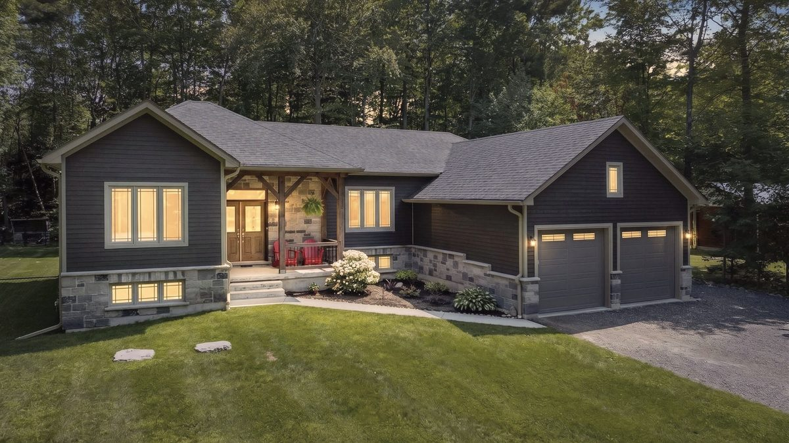

Market update

Simcoe County recorded 144 sales in the week of July 27 to August 2, 2026, at an average sale price of $706,214, with 7.9 months of inventory. It remains a buyer's market. The list to sale price ratio held at 96 percent, and days on market rose from 42 to 47, the clearest signal in the week's data.
Key takeaways
- Simcoe County sits at 7.9 months of inventory, which is a buyer's market.
- Days on market rose from 42 to 47, the longest stretch in six weeks.
- The list to sale price ratio held at 96 percent, so well prepared homes still sell close to asking.
- Active listings fell by 127 while new listings rose by 24, meaning unsold homes are leaving the board.
- The 4.0 percent drop in average price reflects the mix of homes sold, not a fall in values.
The headline read is easy. Sales fell, the average sale price fell four percent, and buyers are sitting on 7.9 months of inventory. Read only that and you would think the market slipped again.
The real read
Look at what held. The list to sale price ratio stayed at 96 percent. The homes that sold still landed within four points of where they were priced. A four percent move in a weekly average built on 144 sales is a mix story, not a value story. Two fewer waterfront closings will do that on their own.
What actually changed is time. Days on market moved from 42 to 47, the longest stretch in six weeks. That is the number worth watching, because time moves before price does.
The supply story
New listings rose to 492 while active inventory fell by 127. Fresh supply went up and total supply went down in the same week. That gap is unsold listings leaving the board rather than selling. Months of inventory eased from 8.0 to 7.9.
Sellers who were not getting activity are stepping back to rethink. That is not weakness. It is a market clearing out the listings that were never priced to trade.
The bigger picture
The mix is not only shifting here. CBC News reported in June that homes under $500,000 now make up nearly 24 percent of the Ontario market, up from 17 percent in 2022, while homes above $1 million have fallen from a 35 percent peak to roughly 25 percent. That is Municipal Property Assessment Corporation data covering the entire province, and MPAC's chief assessor calls it a rebalancing.
It also describes precisely what a weekly average picks up. When the composition of what sells moves, the average moves with it, whether or not any individual home is worth a dollar less.
A buyer's market does not mean sellers lose
It means the market pays for preparation. Accurate pricing, real presentation and an actual marketing plan still produce clean sales at 96 percent of ask. Everything else waits 47 days, and then waits longer.
What this means for you
Buying: you have selection, time and room to negotiate. Bring a firm number and use it.
Selling: price to the last thirty days, not to last spring. The homes trading at 96 percent are the ones that came out ready.
If you are weighing a move around Midland, Penetanguishene, Tiny, Tay or Wasaga Beach this fall, the shape of this market is workable. It just rewards a plan.
The week at a glance
| Metric | This week | Change |
|---|---|---|
| Sales | 144 | down 28 |
| Average Sale Price | $706,214 | down 4.0% |
| New Listings | 492 | up 24 |
| Active Listings | 5,427 | down 127 |
| Sales to New Listing Ratio | 29% | down 8 points |
| Months of Inventory | 7.9 | down from 8.0 |
| Days on Market | 47 | up 5 days |
| List to Sale Price Ratio | 96% | no change |
Common questions about this market
Is it a buyer's market in Simcoe County right now?
Yes. Months of inventory sat at 7.9 in the week of July 27 to August 2, 2026. Anything above six months is generally considered a buyer's market, which means buyers in Simcoe County have selection and negotiating room.
How long are homes taking to sell in Simcoe County?
Homes in Simcoe County averaged 47 days on market in the week of July 27 to August 2, 2026, up from 42 days the week before and the longest stretch in six weeks.
Are home prices going up or down in Georgian Bay?
The average sale price in Simcoe County fell 4.0 percent to $706,214 in the week of July 27 to August 2, 2026. A weekly average moves with the mix of homes sold, and the list to sale price ratio held at 96 percent, which suggests values held and the mix changed.
What should sellers in Midland or Penetanguishene do in this market?
Price to the last thirty days rather than to last spring, and invest in presentation and marketing. In the week of July 27 to August 2, 2026, homes across Simcoe County still sold at about 96 percent of their asking price when they came to market prepared.
Thinking about a move in Georgian Bay this summer? Send me a message and we can talk through exactly what these numbers mean for your street, your timeline, and your specific home. If you have a home to sell, I can also put together a free, no-obligation valuation.
Frequently asked questions
Is it a buyer's market in Simcoe County right now?
Yes. Months of inventory sat at 7.9 in the week of July 27 to August 2, 2026. Anything above six months is generally considered a buyer's market, which means buyers in Simcoe County have selection and negotiating room.
Keep reading
- Selling your home in Midland, Ontario
- Is now the right time to buy or sell in Midland, Ontario?
- Eight Months of Inventory Sounds Like a Warning
By Jonathan Wallace, REALTOR®, Faris Team Real Estate, Brokerage. 705-433-2525. Figures are aggregated board statistics for Simcoe County and are approximate and subject to revision. Ask for current data for your specific area and property type before making a decision.